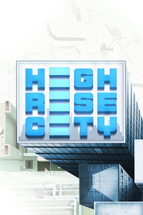

Highrise City
Detalles
|  | |
| Tiempo de juego | No Jugado |
| Última actividad | Nunca |
| Añadido | 11/13/2024 0:35:38 |
| Modificado | 11/13/2024 1:06:02 |
| Estado de finalización | No Jugado |
| Librería | Playnite |
| Fuente | PORCHE |
| Plataforma | PC (Windows) |
| Fecha de lanzamiento | 9/4/2023 |
| Puntuación de la Comunidad | 76 |
| Puntuación de la Crítica | |
| Puntuación de usuario | |
| Género | Estrategia Simuladores |
| Desarrollador | Fourexo Entertainment |
| Editor | Deck13 |
| Característica | Logros De Préstamo Familiar Un Jugador Workshop |
| Enlaces | Punto de encuentro Discusiones Guías Noticias Página de la tienda PCGamingWiki Logros Workshop |
| Tag | 3D Cinematográficos Coloridos Construcción Construcción de ciudades Diplomacia Economía Estrategia Gestión Gestión de recursos Modernos Modificables Mundo abierto Para toda la familia Relajantes Sandbox Simulación Simulador de colonias Simulador inmersivo Un jugador |
Descripción
Highrise City también se ha traducido automáticamente al español. Puedes seleccionar el idioma en el juego.


Sobre el equipo y el juego
Obviamente, como jugador compararás Highrise City con otros juegos. Si lo haces, ten en cuenta que el centro de atención de Highrise City son las cadenas de producción. Gestionarlas bien es un factor clave para establecer una ciudad en constante crecimiento. El juego es más que un constructor de ciudades tradicional y está fuertemente influenciado por las simulaciones de economía. Fue desarrollado por un pequeño equipo como un proyecto de pasión durante los últimos 9 años, mientras que durante 7 años el juego fue desarrollado como un proyecto unipersonal.¡Hagamos crecer una ciudad!
Highrise City ofrece un nuevo giro a los juegos de simulación de ciudades y tycoon al ampliar los aspectos de economía y gestión de recursos. Experimenta una versión moderna del género, enriquecida con un complejo sistema económico basado en recursos. Highrise Citycombina dos géneros de formas nuevas e interesantes: Los constructores de ciudades y las simulaciones tradicionales de economía y gestión de recursos. Highrise City te ofrece una jugabilidad desafiante y te proporciona todas las posibilidades y herramientas que necesitas para crear una ciudad viva y dinámica. ¡Cuida de tu ciudad y haz que crezca y florezca hasta convertirse en una gigantesca Metrópolis!Planifica tu megaciudad
En Highrise Cityno solo construyes una ciudad, sino que también la gestionas activamente encargándote de sus suministros económicos. Organiza y construye cadenas de suministro de forma eficiente y asegúrate de que tu economía está bien equilibrada para garantizar un crecimiento constante. De este modo, podrás crear auténticas megaciudades con decenas de millones de ciudadanos.Características
- Hasta 40 Millones de habitantes por ciudad
- Más de 310 edificios base
- Más de 60 recursos diferentes
- Más de 30.000 edificios por ciudad
- Más de 10.000 coches y vehículos por escenario
- Más de 20.000 ciudadanos por escenario (y más de 5 millones por ciudad simulada)
- 196 km² de posibles zonas de juego en cada mapa
- 5 niveles de población diferentes
- Mapas basados en regiones geográficas reales, como Nueva York, Vancouver y Río
- Niveles de dificultad ajustables para jugadores principiantes y avanzados
- Mejora la ciudad con leyes e investigación tecnológica
- Comercio de recursos para equilibrar tu economía
- New Game Plus con nuevos desafíos y un modo de planos.
- Un Constructor de Ciudades con una historia y misiones reales
- Recicla la basura para obtener valiosos recursos
- Editor de edificios